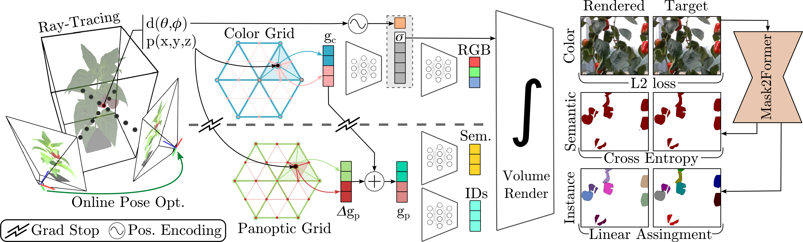

PAg-NeRF: Towards fast and efficient end-to-end panoptic 3D representations for agricultural robotics
TL;DR: PAg-NeRF is a fast and efficient model, targeted for challenging agricultural scenarios, that can render photo-realistic panoptic 3D maps from images, panoptic detections and robot odometry.
Abstract
Precise scene understanding is key for most robot monitoring and intervention tasks in agriculture. In this work we present PAg-NeRF which is a novel NeRF-based system that enables 3D panoptic scene understanding. Our representation is trained using an image sequence with noisy robot odometry poses and automatic panoptic predictions with inconsistent IDs between frames. Despite this noisy input, our system is able to output scene geometry, photo-realistic renders and 3D consistent panoptic representations with consistent instance IDs. We evaluate this novel system in a very challenging horticultural scenario and in doing so demonstrate an end-to-end trainable system that can make use of noisy robot poses rather than precise poses that have to be pre-calculated. Compared to a baseline approach the peak signal to noise ratio is improved from 21.34dB to 23.37dB while the panoptic quality improves from 56.65% to 70.08%. Furthermore, our approach is faster and can be tuned to improve inference time by more than a factor of 2 while being memory efficient with approximately 12 times fewer parameters.
Video
Architecture

We use state-of-the-art permutohedral feature hash-grids to encode 3D space, allowing our system to be fast and memory efficient.
Our architecture uses novel delta grid that computes panoptic features by correcting the color features, leveraging the similarity between modalities.
Thanks to the implicit sparseness of hash-grids, we are able to reduce the panoptic capacity to only have valid values where corrections are needed.
We avoid propagating gradients from the panoptic to the color branch to ensure the panoptic grid only learns corrections over the color features.
Our grid based architecture allows us to decoded all render quantities with very shallow MLPs.
To learn 3D consistent instant IDs from inconsistent ID still-image predictions, we employ a modified linear assignment loss, tackling the fix scale nature of several agricultural datasets, rejecting repeated IDs.
To obtain high-detail multi-view consistent renders, we also perform online pose optimization, making our system end-to-end trainable.
Results Comparison (click to enlarge)
PAg-NeRF is able to reproduce very fine details of the fruit and leaf textures as well as high frequency edges and thin structures that get smoothed out by Panoptic Lifting. Most instances produced by PAg-NeRF are well segmented even though high levels of occlusion, varying illumination conditions and camera shake. Additionally, thanks to our repeated ID rejection loss, our model is able to properly distinguish between instances at the far ends of the frame, whereas Panoptic Lifting merges them into a single detection with long bounding boxes since it uses a plain linear assignment loss during training. PAg-NeRF achieves these results with very shallow NN decoders in contrast to panoptic lifting and can be tuned to be 2x Faster with 12x less parameters.
Key Model Advantages (click to enlarge)
Consistent Instance IDs
Our model takes as input still-image panoptic detections from a Mask2Former, with instance IDs changing every frame, and extracts instances with consistent ID using its implicit 3D representation and a robust linear assignment loss.
Repeated ID Rejection
We proposed a modified linear assignment loss, robust to repeated ID assignment, for data with planar camera motion parallel to a quasi-planar distribution of targets.
Online Pose Optimization
Our model refines noisy robot odometry with online pose optimization to estimate the correct camera motion. This leads to both higher render and panoptic performance.
3D Panoptic Maps
3D panoptic pointclouds can be extracted from our implicit representation, by rendering color and panoptic images and un-pojecting them with the corresponding estimated ray termination.
Individual fruit instances can be extracted from the panoptic map by keeping only points that have valid instance IDs.
This type of output can be used to count individual peppers or combine it with prior knowledge-based prediction approaches to regress a mesh representation of individual peppers, from which volume and quality can be inferred.
Citation
Acknowledgements
This work was developed in collaboration with the Aid4Crops project and the PhenoRob Cluster of Excelence.
Further more this project was partially funded by the Deutsche Forschungsgemeinschaft (DFG, German Research Foundation) 459376902 and under Germany’s Excellence Strategy - EXC 2070 – 390732324.
The website template was borrowed from Michaël Gharbi and Ref-NeRF.